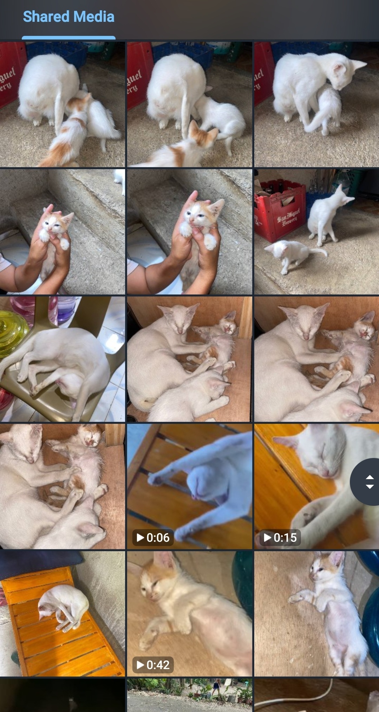

I always challenged myself to cook a unfamiliar dish (not all)
for my family. It was a mix of excitement and
panic, but in the end, everyone enjoyed it!
“ The secret ingredient is always love. ”
My quick tips for cooking:
Prepare ingredients early.
Explore and use simple but tasty recipes.
Stay calm even when the clock is ticking.
Why Cats Are the Best Companions
My cats always remind me to take breaks and enjoy little things in life.
They may be independent, but they also love cuddles when
you least expect it.

" Cats choose us; we don't own them. "
Here are the top 3 reasons I love my cats:
They keep me company while I cook or study.
Their silly antics always make me laugh.
They remind me to rest and relax.
Want to know more about cat care?
Click here
for helpful resources.